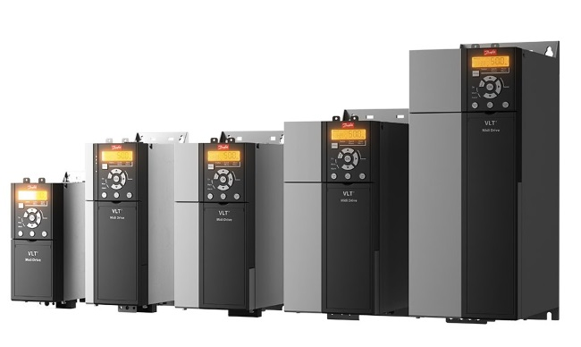

Содержание
- Как работают преобразователи частоты для асинхронных двигателей
- Принцип действия частотных преобразователей
- Выбор частотного преобразователя
Как работают преобразователи частоты для асинхронных двигателей
Асинхронные электродвигатели – самые распространенные электрические машины. Они отличаются простотой конструкции, дешевизной, высокой ремонтопригодностью, а также другими преимуществами. Они широко используются для привода промышленного оборудования, механизмов и устройств самого разного назначения. Сферу их применения несколько ограничивают высокие пусковые токи, затруднение регулирования скорости, ударные механические нагрузки на оборудование, соединенное с валом при пуске.
Частотные преобразователи позволяют осуществлять мягкий пуск электрических машин, ограничивать пусковые токи, синхронизировать момент силы на валу с моментом нагрузки, осуществлять точную регулировку скорости вращения, подключать трехфазные двигатели в однофазную сеть без конденсаторов.
Электродвигатель – устройство для преобразования электроэнергии во вращательное движение вращающейся части электрической машины. Преобразование энергии в двигателях происходит за счет взаимодействия магнитных полей обмоток статора и ротора. Эти электрические машины широко используются во всех отраслях промышленности, в качестве привода электротранспорта и инструментов, в системах автоматизации, бытовой техники и так далее.
Принцип действия частотных преобразователей
Принцип действия частотного регулирования основан на зависимости скорости вращения и момента силы на валу двигателя переменного тока от частоты напряжения питания. Частотные регуляторы изменяют частоту поданного на электродвигатель напряжения, тем самым регулируя скорость вращения ротора и момент силы. Преобразование частоты может осуществляться несколькими способами. Схема преобразования частоты с непосредственной электрической связью с сетью представляет собой управляемый выпрямитель на тиристорах. Управляющий блок генерирует сигналы, поочередно отпирающие полупроводниковые устройства, подающие напряжение заданной частоты на обмотки электрической машины. Такая схема отличается высоким к.п.д., обеспечивает стабильную работу двигателя при небольших скоростях вращения ротора, передачу генерируемой электроэнергии при торможении двигателя в сеть. Однако, такие недостатки, как невозможность изменять частоту в большую сторону, наличие в выходном напряжении постоянной составляющей и субгармоник, вызывающих перегрев обмоток и появление электромагнитных помех, ограничивают сферы применения частотников с непосредственной связью. Большинство современных частотных преобразователей построено на базе схем двойного преобразования. Такое техническое решение имеет следующие преимущества:
- Возможность изменять частоту как в большую, так и меньшую сторону.
- Выходное напряжение чистой синусоидальной формы.
- Отсутствие высших гармоник.
- Плавное, высокоточное регулирование частоты питающего напряжения двигателя.
Состоит такой преобразователь частоты из трех блоков:
- Диодного или тиристорного выпрямителя с емкостными, индуктивными или комбинированными фильтрами. Этот узел осуществляет выпрямление сетевого напряжения и его сглаживание.
- Инвертирующего блока. Этот элемент осуществляет обратное преобразование постоянного напряжения в переменное. Индуктивный элемент на выходе осуществляет фильтрацию постоянной составляющей, а также высокочастотных помех, наличие которых негативно сказывается на работе электродвигателя.
- Управляющей схемы на базе микропроцессора. Основные ее функции – задание частоты выходного напряжения и тока. Частота тока на выходе инвертора определяется шириной или длительностью управляющих импульсов со схемы управления (широтно- или частотно- импульсная модуляция). Процессор также осуществляет связь с удаленными пунктами управления, автоматическое регулирование по обратной связи по механическим и электрическим характеристикам подключенной к нему электрической машины, а также другие функции.
Таким образом, при частотном регулировании питающее напряжение сначала преобразуется в постоянное, затем инвертируется в переменное напряжение требуемой частоты.
Выбор частотного преобразователя
- Назначение преобразователя. Многие производители выпускают ПЧ, предназначенные для электродвигателей насосов, лифтов, электроприводов вентиляционных систем, а также универсальные устройства общепромышленного назначения. Специализированные частотники производят под конкретное технологическое оборудование. Возможность их адаптации существенно ограничена. Общепромышленные регуляторы частоты можно настраивать под различные приводы.
- Способ управления и поддержка различных протоколов связи. Регулируемые по частоте электроприводы обычно интегрируются в комплексные системы автоматизации и удаленного контроля и управления. Частотный преобразователь должен быть укомплектован контроллером, который поддерживает связь по протоколу, применяемому в конкретной АСУТП.
- Мощность и перезагрузочная способность. Номинальная электрическая мощность преобразователя должна быть больше аналогичного параметра электродвигателя на 15-30%. При расчете мощности учитывают пусковые токи электрической машины, пиковые нагрузки на двигатель и их длительность. Ошибки ведут к перегреву частотника, выходу из строя силовых транзисторов или тиристоров.
- иапазон и точность регулирования. Интервал изменения частоты и точность ее задания должны соответствовать требованиям условий технологического процесса. Возможность изменения частоты у скалярных преобразователей 1:10, если требуется более широкий диапазон, необходим частотник с векторным управлением.
- Электромагнитная совместимость. Частотный преобразователь чувствителен к электромагнитным помехам и сам является их источником. Выбор устройства осуществляется на основании условий его установки. При необходимости может потребоваться его установка в отдельном помещении, подключение специальных фильтров и использование экранированных кабелей. Компания «Данфосс» выпускает преобразователи, укомплектованные встроенными ЭМ-фильтрами.
- Наличие функций отключения двигателя при перегреве, дисбалансе фаз, перегрузках, других аварийных и ненормальных режимов работы.
- Количество входов и выходов для подключения удаленных устройств управления и контроля. На случай модернизации САР или усложнения АСТП рекомендуется выбрать частотники с избыточным количеством аналоговых и дискретных разъемов. Для электроприводов автоматизированных систем рекомендуется подобрать частотный регулятор со встроенной памятью и функцией ведения журнала событий.
- Номинальный ток и напряжение. Электрические параметры частотника должны соответствовать характеристикам электродвигателя.
- Наличие автоматизированного управления по событиям. Для синхронизации работы промышленного оборудования необходимы частотники, имеющие функции регулирования по достижению определенной величины технологических параметров.
Выбор частотного регулятора для промышленного оборудования делается на основании расчетов по специализированным методикам. Малейшие ошибки могут привести к авариям, которые могут иметь непредсказуемые последствия. Проектирование электропривода и выбор ПЧ целесообразно доверить специалистам по автоматизации. Правильный выбор частотника обеспечивает экономию электроэнергии до 40-50%, снижение затрат на ремонт и обслуживание электропривода и дает неплохой экономический эффект.